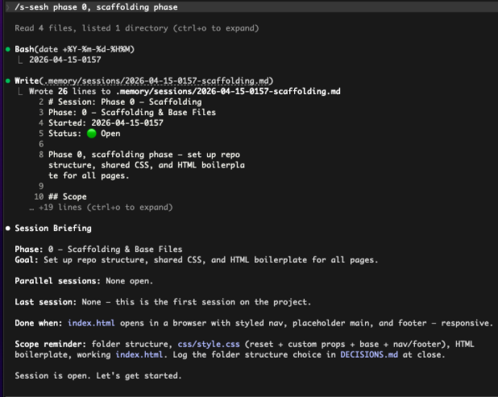
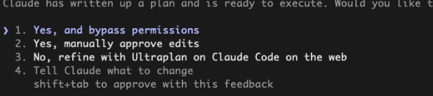
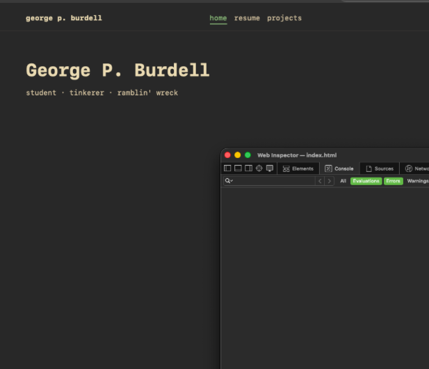

Website Scaffolding
Run your first real session. Draft a plan, let Claude scaffold the site, and add two skills that automate the end of every phase after this one.
While we hinted at it in the setup, the project for this tutorial is a personal website with a home page, a resume page, and a projects page. Plain HTML and CSS, hosted on GitHub Pages, no JavaScript or frameworks. Phase 0, the one you're doing now, is the scaffolding. That means the folder structure, the shared stylesheet, and the HTML boilerplate that every page will use. Think of it like pouring the foundation before framing a house. Get it right now and every later phase is easy, since the focus is on content instead of underlying architecture.
Start the Session
From your project folder:
/new
/rename init
/s-sesh phase 0, scaffolding phase/new→ clears any leftover context from your last session/rename init→ labels the session so you can/resumeit by name later-
/s-sesh→ runs the skill you set up in Part 2. Pulls inPLAN.md,STATUS.md,LAST_SESSION.md, and prints a briefing. The argument is your goal for this session.

/s-sesh reads your memory files and prints a briefing so Claude starts the session already knowing the
phase, the goal, and what "done" looks like.
Plan Mode
Enter plan mode with /plan. In this mode Claude writes a plan but won't touch files yet. Describe what you want the site
to look and feel like. The more specific you are, the less revision you'll do later. Useful things to include:
- Visual direction → tone, font choice, color palette or theme name
- Constraints → "no JavaScript", "hosted on GitHub Pages", "works on mobile"
- Structure → which pages, what's shared across them, what's unique
- What each phase owns → so later phases can run in parallel without stepping on each other
For example:
lets plan out phase 0. the overall style im going for here is clean
and minimal. think developer, monospace font, gruvbox theme. we
should support light mode and dark mode. styling should be clearly
labeled and reusable. boilerplate should be set up so that phases
1, 2, 3 can all be worked on in parallel. separate pages for all
of those. index.html is just scaffolding.Claude writes a plan. Read the whole thing. Plans get long but this is the single most important step. If you and Claude don't agree on what's being built, it builds the wrong thing. You have four options when it's ready:
- Approve and bypass permissions
- Approve with manual review on each edit
- Refine with Ultraplan (a bigger planning pass on the web)
- Tell Claude what to change

Use option 4 liberally. It's always going to be easier to iterate on the plan than to undo bad code that is already written.
/voice command or a tool
like
Wispr Flow
works. Getting the vision out of your head is faster out loud, and revisions feel more like a conversation.
Smoke-Test Skill
A smoke test is a quick sanity check, not a full test suite. But sanity checks are important, and while AI is phenomenal at writing code, quality assurance is still best to be done by humans. You run it after a change to catch obvious breakage, like checking if a file went missing, is the HTML valid, did a stylesheet fail to load. The name comes from hardware engineering. Hardware engineers would plug in the circuit, see if smoke comes out.
Before closing the session, build a reusable smoke-test skill using the built-in skill-creator:
/skill-creator:skill-creator create a smoke test skill where i can
run at the end of every phase where there is significant changes
and you can give me actionable steps to ensure everything functions
properly and things run smoothly
It writes a checklist skill scoped to your project. The skill checks that files exist, HTML is valid, CSS tokens are defined, and no
links are broken. Runs as /smoke-test. Flags potential issues as FAIL, WARN, or PASS.
PR Skill
The logic is the same for committing. One command that stages, commits, pushes a branch, and opens a PR with a written description:
/skill-creator:skill-creator create a skill called pr that
conventionally commits all changes from this session in a new
branch, pushes to that branch, and prs with a detailed description
of these changes. create a positional argument for auto merge or
not. normal pr just prs, anything with "merge / auto / auto merge"
should auto merge and switch to master
Have the pr skill run c-sesh before any git work. That way your session-close edits (STATUS.md,
LAST_SESSION.md, DECISIONS.md) in the same PR instead of lagging behind as a second commit.
/pr auto) that replaces ten.
Close Out
If you built the combined skill above, just run:
/pr autoIf not, run them by hand:
/smoke-test
/c-sesh
/prEither way, you end with Phase 0 scaffolded, smoke-tested, committed, PR'd, and the session logged. Everything Phases 1, 2, and 3 need is now in place, and they can be built in parallel.

You're Writing a Language
Step back and look at what we've set up. /s-sesh, /c-sesh, /smoke-test, /pr,
/pr auto, CLAUDE.md, the .memory/ files. None of that is Claude Code out of the box; these are
all things that we've set up so far.
That's the point. You're not just telling an AI what to do, you're building a command set that drives it.
/s-sesh phase 0 is a function call and /pr auto is a pipeline. CLAUDE.md is a contract. Skills
calling skills is composition.
From here on out every phase gets easier because the language you've written automates redundancy.